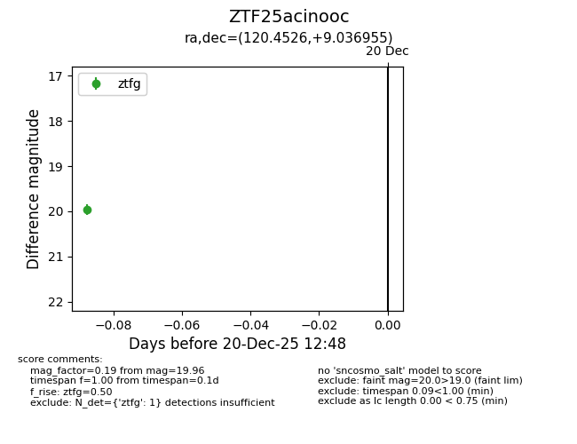
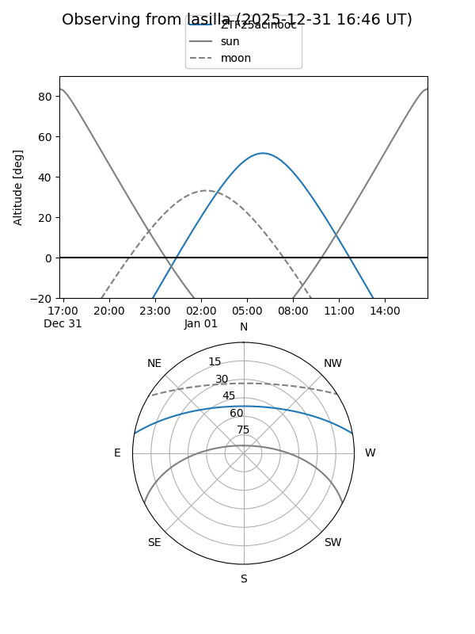
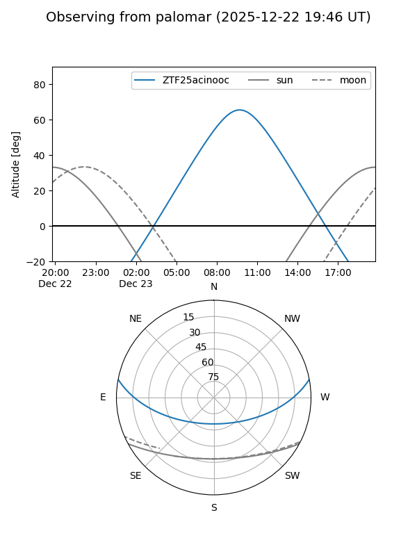
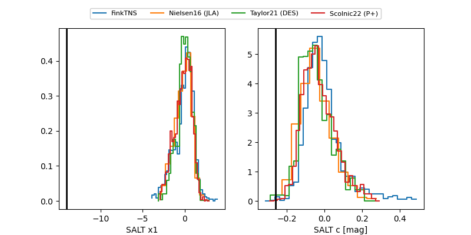

ZTF25acinooc
Target ZTF25acinooc at 2025-12-20 12:49
Aliases and brokers:
FINK: fink-portal.org/ZTF25acinooc
Lasair: lasair-ztf.lsst.ac.uk/objects/ZTF25acinooc
ALeRCE: alerce.online/object/ZTF25acinooc
alt names
ZTF25acinooc (ztf,fink_ztf)
Coordinates:
equatorial (ra, dec) = 120.4526,+9.03695
equatorial (HMS+DMS) = 08:01:48.62,+09:02:13.04
galactic (l, b) = (212.7080,+19.71163)
Flags:
Photometry:
last ztfg=19.96
1 ztfg detections
Lightcurve

Visibility


Additional plots
